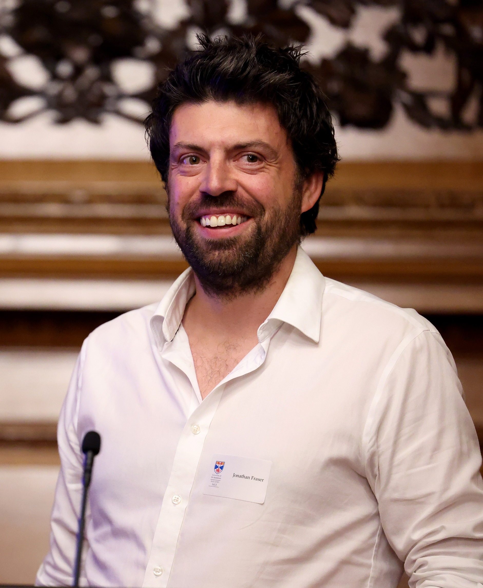

|  |
I am a Professor of Mathematics and Statistics at the University of St Andrews
and Head of the
Analysis Research Group.
► Publications - links to research papers, survey articles, and other publications ► Research - more details about my research interests ► Talks and notes - notes, slides and videos from old talks and courses ► Links - various mathematical links and links to webpages of collaborators and research students ► Assouad Dimension and Fractal Geometry - various things related to my book, including open problems ► Biography - basic information about my career path to date Journals: I am the Editor-in-Chief of Proceedings of the Royal Society of Edinburgh (Section A). This is a generalist journal considering high quality submissions across the whole of mathematics. I am also on the Editorial Board of Journal of Fractal Geometry. If you wish to submit a paper, please follow the instructions on the journal webpages.One World Fractals: Together with Thomas Jordan, Natalia Jurga, Antti Käenmäki, Henna Koivusalo and Sascha Troscheit, I am organising a seminar series on Fractal Geometry. This will run online roughly every two months. From April 2025 I will hold a 5-year EPSRC Open Fellowship. Associated with this are two 3-year PDRA positions and two 3-year PhD studentships. The first PDRA position is open and you can find more details and apply here. The closing date for applications is March 31st and interviews will take place sometime thereafter. The position is available from August 2025. Please pass this information on to anyone you think might be interested. My plan is to hire another PDRA to start in August/September 2026. I also plan to hire one student in September 2025 and another in September 2026. For the PhD studentships you should apply directly to the university but mention me as the supervisor. Applications for the PhD studentship should be in by the end of December or early January at the latest. Please alert anyone who might be interested to keep an eye out for these future positions. NEW: We are also currently advertising a permanent lectureship in our analysis group. You can find more details and apply here. The closing date for applications is March 14th. Please pass this information on to anyone you think might be interested. |
|
Contact details:
School of Mathematics and Statistics |
|